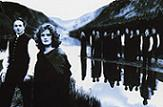

Celtic Lyrics Corner > Artists & Groups > Anúna
|  | Anúna |
| Director : | Michael McGlynn |
| Albums : |
1993 -
Anúna
1995 - Invocation 1995 - Omnis (Irish Release) 1997 - Omnis (U.S. Release) 1999 - Deep Dead Blue 19?? - Behind The Closed Eye 19?? - Songs For A Celtic Christmas 2000 - Cynara 2002 - Anúna 2002 2002 - Invocation 2002 2002 - Winter Songs 2003 - Relics 2006 - Sensation 2007 - Celtic Origins |
| Also On : |
Secret Garden's albums
Dawn Of A New Century
and
Once In A Red Moon
The Riverdance soundtrack |